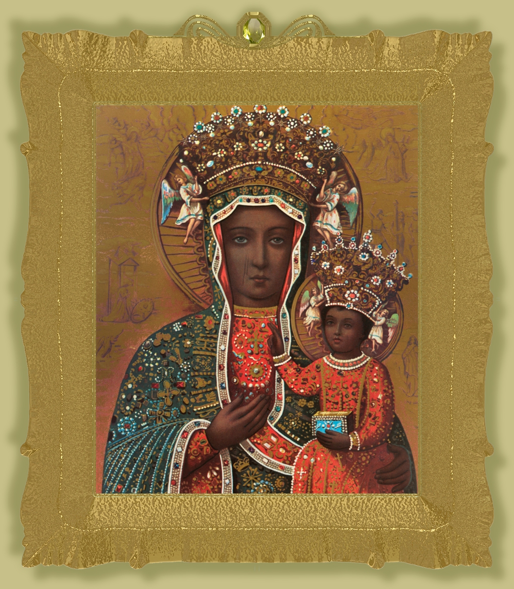

"NOSSA SENHORA DE CZESTOCHOWA"



"OS FATOS AMPLAMENTE AQUI DESCRITOS, COMPROVAM QUE A SANTÍSSIMA VIRGEM MARIA, NOSSA SENHORA MÃE DE DEUS, NUNCA ABANDONA OS SEUS FILHOS E FILHAS, QUE BUSCAM A SUA TÃO PRECIOSA E QUERIDA PROTEÇÃO, SEJA EM TEMPO DE PAZ, SEJA EM TEMPO DE GUERRA".


=ÍNDICE=
 -
"PODER MILAGROSO DA PINTURA"
-
"PODER MILAGROSO DA PINTURA"
-
"DERRADEIRAS PALAVRAS + FOTOS"